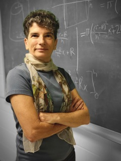

Nataša Jonoska is a Distinguished Professor at the Department of Mathematics and Statistics at University of South Florida in Tampa Florida. Her research interests are in theoretical and computational models of molecular self-assembly and molecular biology. She has had extensive research collaborations with experimentalists in molecular biology and structural DNA nano technology. She holds a PhD degree in Mathematical Sciences from the State University of New York in Binghamton NY, USA and since 2014 she is a Fellow of the American Association for the Advancement of Science. Her work on three-dimensional DNA self-assembly as computing models has been awarded with a Rozenberg Tulip Award in DNA Computing and Molecular Programming by the International Society for Nanoscale Science and Computing. Her work has been/is supported by the National Science Foundation (NSF), National Institute of Health (NIH), the W.M. Keck Foundation and for 2022 she is a Simons Fellow in Mathematics. For ten years she served as a Chair of the annual DNA Computing and Molecular Programming conference and co-chaired the annual Unconventional Computing and Natural Computing conference. She also serves on editorial boards of several journals and has edited nine books on these topics. In 2021 the Florida section of Mathematical Association of America awarded her with the MAA award for Distinguished College or University Teaching of Mathematics